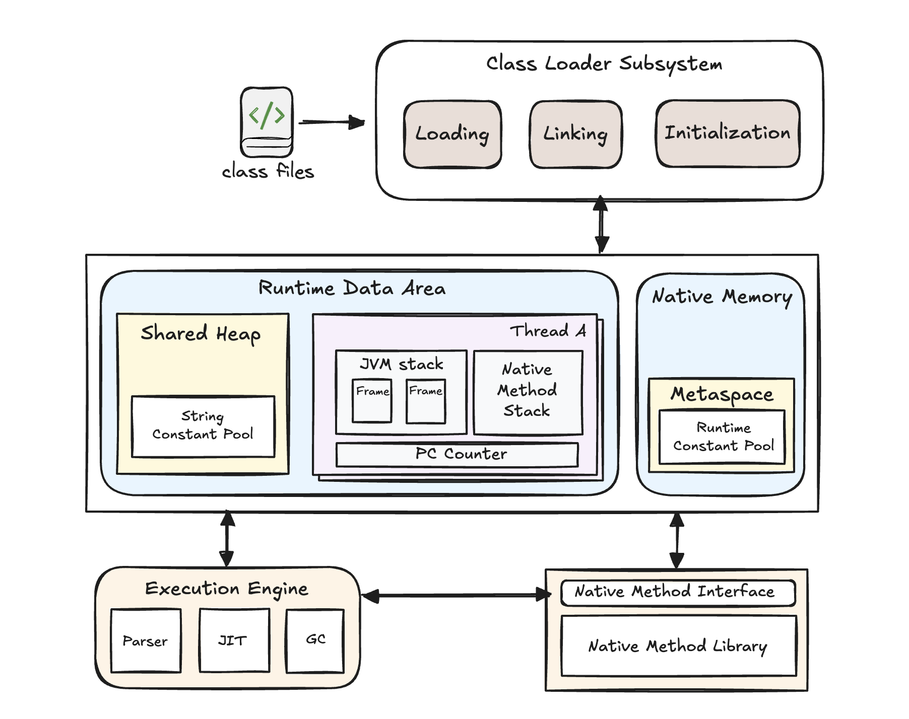

JVM-整体框架理解
在学习一个过程中，最重要的是清楚这个东西为什么出现，有什么作用，其次就是对它的整体架构在脑海中建立一个粗略的地图，每一个子模块有什么作用，子模块之间如何关联。本篇文章总结在学习JVM时所学到的知识。
JVM是什么
JVM时Java Virtual Machine的缩写，即JAVA虚拟机。是实体计算机的一种抽象和虚拟，拥有自己的指令集、堆、栈的概念。但实际上JVM本身是一个运行在OS用户态的应用程序。
为什么需要JVM
一个很重要的问题就是，为什么需要一个虚拟机作为计算机的抽象？操作系统不已经屏蔽掉了硬件平台的差异么？操作系统确实以及屏蔽掉了不同硬件平台的差异，但要编译运行一个程序时（比如c/c++），需要针对不同操作系统和指令集设计编译器，将源代码文件生成对应的二进制文件。不同的指令集架构所包含的二进制指令集是不同的，这就导致在一个主机A编写好的程序如果想要在主机B（完全不同的操作系统和指令集）上运行，就需要获取源代码文件，重新编译，这是相当麻烦的。为了解决跨平台问题，即“一次编译，处处运行”，解决思路是，再在操作系统上封装一层虚拟平台，负责Java到指定操作系统的转换，其实是面向Java开发人员屏蔽掉了开发不同平台应用的复杂度，只需要开发一次，编译一次就可以运行在不同的硬件平台上。只是把这项繁杂的工作交给了JVM的开发人员。
JVM的整体架构

JVM的整体框架如上图所示。
1. Class Loader Subsystem（类加载子系统）
Loading（加载）：从文件系统或网络等来源读取 .class 文件，将其内容载入内存，并生成对应的 Class 对象。
Linking（链接）：将类的二进制数据合并到 JVM 运行时环境中。包括校验（Verify）字节码合法性、为静态变量分配内存、解析（Resolve）符号引用等过程。
Initialization（初始化）：执行类的静态初始化块和静态变量赋值操作，确保类在真正使用前完成必要的准备。
2. Runtime Data Area（运行时数据区）
这部分区域是运行过程中主要分配和管理的内存区域。包含堆（共享空间），以及每一个thread的独立执行空间，这部分空间用于保存thread的PC计数器、JVM栈以及本方法栈。堆中是存放new数据的区域，有一个比较重要的概念就是String Constant Pool，即字符串常量池。
字符串常量池（String Constant Pool）是 Java 中的一块特殊内存区域，用于存储字符串字面量。其主要目的是通过共享相同内容的字符串对象，避免重复创建，进而节省内存空间并提高性能。
为什么需要字符串常量池？
节省内存空间：在许多应用程序中，字符串是被频繁使用的对象。如果每次创建相同内容的字符串都生成新的对象，会导致内存浪费。字符串常量池通过存储唯一的字符串实例，确保相同内容的字符串共享同一个对象，从而减少内存占用。
提高性能：由于字符串在常量池中是唯一的，比较两个字符串是否相等时，可以直接比较它们的引用（内存地址），这比逐字符比较效率更高。此外，重复使用现有的字符串对象也减少了创建新对象的开销。
实现字符串不可变性：Java 中的字符串是不可变的（immutable），即字符串对象一旦创建，其内容无法更改。这种特性使得字符串常量池的共享机制成为可能，因为无需担心对象被修改而导致数据不一致。
可以结合如下代码，理解字符串常量池。
public class StringPoolDemo {
public static void main(String[] args) {
// 1. 直接使用双引号赋值，"Hello" 属于字符串常量。
// s1 与 s2 指向字符串常量池中的同一个对象。
String s1 = "Hello";
String s2 = "Hello";
// 2. new 关键字会显式创建一个新的 String 对象，存储在堆（Heap）上。
// 而此时字面量 "Hello" 依旧在字符串常量池中。
String s3 = new String("Hello");
// 3. 使用 == 比较的是引用（对象在内存中的地址）。
// 由于 s1 和 s2 都指向常量池中的同一个 "Hello"，因此为 true。
System.out.println("s1 == s2: " + (s1 == s2)); // true
// 4. s3 是通过 new 创建的新的 String 对象，所以和 s1 不相同。
System.out.println("s1 == s3: " + (s1 == s3)); // false
// 5. 调用 s3.intern() 时，会返回常量池中对应 "Hello" 的引用。
// 由于 s1 恰好也是指向常量池中的 "Hello"，两者相同。
System.out.println("s1 == s3.intern(): " + (s1 == s3.intern())); // true
}
}需要注意的是：
使用 new 关键字创建字符串：如果通过 new 关键字创建字符串，例如 String str3 = new String("Hello");，会在堆内存中创建一个新的字符串对象，即使常量池中已经存在相同内容的字符串。因此，str3 与通过字面量方式创建的字符串引用不同的对象。
intern() 方法：String 类的 intern() 方法可以将字符串添加到常量池中，或者返回常量池中已存在的相同内容的字符串的引用。例如，str3.intern() 会返回常量池中 "Hello" 的引用。